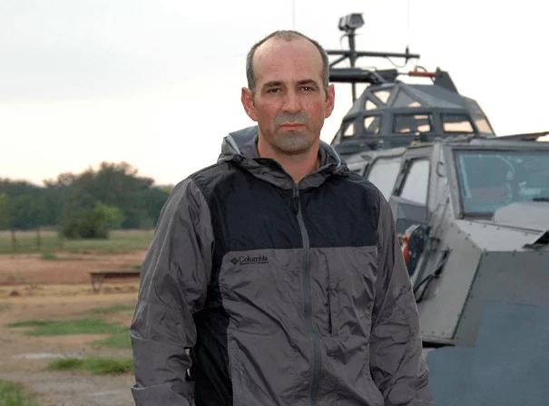

DOCUMENTAIRE • IMAX
Sean Casey
Cinéaste et documentariste connu pour son travail consacré aux phénomènes météorologiques extrêmes et pour les véhicules TIV développés pour filmer les tornades.
Découvrir le TIV →